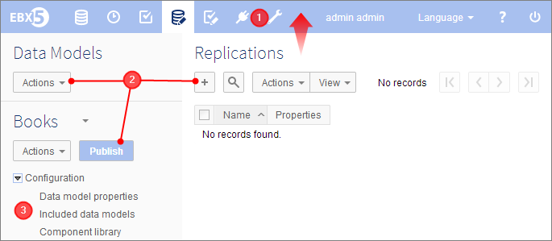
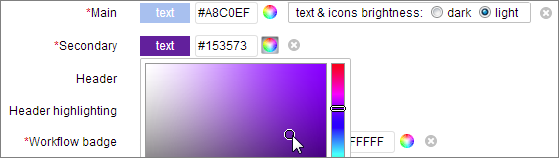

Fix 001 Release Date: October 10, 2013
EBX5 5.4.0 Fix 001 for bug fixes and new workflow permissions.
Initial Release Date: September 30, 2013
This version includes all performance improvements, bug fixes and new features from version 5.3.2.
Due to the automatic upgrade of the product, there may be a one-time performance hit when starting the server with this version for the first time.
This version brings significant updates to EBX5. Notable new features include:
A complete refresh of the user interface look and feel to improve usability.
High customizability of color themes and form submission button labels for total integration into client environments.
"SQL Connect" - Enables automatic data replication to databases accessible to SQL queries.
D3 federated mode for asynchronous broadcasting and automatic retries upon failure.
Additionally, significant performance gains have been made, notably for data space and snapshot creation.
This version includes a major revision to the style of the graphical user interface. These changes bring significant improvements with regard to readability and ease of navigation, allowing users to better focus on meaningful data and their tasks.
The new user interface adopts the principles of "flat design", by employing a clean and minimalist aesthetic with less intrusive visual elements, including:
A simpler, less intrusive header bar, which can be completely minimized when not in use.
Flat buttons that still look clickable, but are not highlighted until the user mouses over.
Removal of unnecessary icons next to labels.

While the visual elements of the interface have a refreshed look, the underlying navigation structure and features remain the same as in previous versions.
The new user interface also facilitates a more complete style integration according to corporate design guidelines by being highly customizable.
It is now possible to choose color themes for the interface, including primary and secondary colors, as well as colors for the navigation pane, and several key elements and buttons. See Graphical interface configuration for more information.

The labels of all form submission buttons are now configurable through the standard administration interface. The default labels of the form buttons have also been changed to "Save", "Save and close" and "Close".
Various components of tabular, hierarchical, and record views can now be hidden using the web component API. The new HTTP parameters viewFeatures and recordFeatures allow hiding elements, such as buttons, the title, record selections, etc. See Layout parameters for more information.
The search filter for tabular views has been redesigned to make entering basic search criteria more convenient.
For example, for foreign key fields or fields populated by an enumeration, the possible values are now proposed to the user. Also, date fields are enhanced with auto-completion.
By default, the search panel displays a simplified mode with basic search criteria. By switching to the advanced search mode, the user is able to use extended operators and can build nested logic.
It is now also possible to input text into the validation message filter to find all records with a validation message containing that text.
In the navigation pane of the Data area, the root element and its associated documentation no longer appear if the node does not contain attributes or terminal groups. Previously, such cases unnecessarily occupied space in the interface. If, however, the root element contains attributes or terminal groups, it will appear in the navigation pane as before.
The presentation of the PDF version of the product documentation has been improved to better delineate sections and chapters. Also, high-level chapters are now numbered to facilitate navigation of the document in hard copy format.
The alignment of form elements has been improved in order to better guarantee uniform display of form layouts. The styling of forms now uses the CSS property "vertical-align: baseline", where the baseline is the line upon which most characters "sit".
For generic EBX5 inline elements:
Text is vertically aligned on the baseline.
Text fields of type string are vertically aligned such that the text they contain are aligned on the baseline.
Buttons are vertically aligned such that their label text is aligned on the baseline.
For generic EBX5 block elements (div, fieldset, textarea, list), the element is vertically aligned such that the first inline element it contains is aligned on the baseline.
For example, complex nodes and lists are aligned according to their first elements.
It is now possible to embed a pane with tabs within a parent pane, which can itself be a tabbed pane, using the custom layout API.
See UIFormPaneWriter.includePane and UIFormPaneWithTabs.addTab in the Java API for more information.
An extensive review of the user interface has been performed with regard to cross-site scripting security vulnerabilities to address remaining issues.
Only users of the data, data spaces, and data workflows areas have been considered to be a potential threat. Users with permissions to access the data modeling and workflow modeling areas are trusted, allowing them to specify descriptions and messages containing HTML formatting (hyperlinks, CSS styles, etc.). However, where HTML formatting is permitted, it remains strongly advised not to use <script> tags.
Initially included in 5.4.0 Fix 001.
A new permission option is available to allow a profile to view completed workflows, even if the profile is not allowed to monitor running workflows. This new permission is available in the workflow modeling area, in the advanced configuration of the workflow monitoring permissions.
In particular, this feature is useful for providing access to the graphical history of completed workflows without having to give access to workflow monitoring, which contains technical information.
The equivalent permission has been added to the ProcessExecutionContext API. See ProcessExecutionContext.VIEW_COMPLETED_WORKFLOW for more information.
A new persistence option has been added to allow replicating data from EBX5 tables to dedicated relational tables. These relational tables thus make master data available to external systems for direct access using SQL requests and views.
To specify the data to be replicated, data models can define replication units that indicate the tables, and their associated data sets and data spaces, to include.
There are several refresh modes for controlling the frequency of updates. The mode 'onCommit' guarantees synchronization at the transactional level, whereas 'onDemand' only replicates upon request. Replica refresh requests can be performed through the user interface, using data services, or through the Java API.
This new option conforms to the persistence principles already implemented for relational and history mode, namely for the creation of dedicated tables and schema updates in the relational database, performed in an automatic and transparent way during data model compilation.
See Configuring replication for more information.
It is now possible to delegate administrative rights to a non-administrator user.
See Administrative delegation for more information.
D3 broadcasts were previously based on the notion of using a single distributed transaction to guarantee that all D3 slave nodes remain synchronized. The drawback of this approach was that it did not take into account the scenario where slave nodes are physically located at remote sites and where there was a high probability that not all slaves would be constantly available.
In order to prevent broadcasts from failing completely in these cases, it is now possible to specify the mode 'Federation' for a broadcast profile. In this case, the broadcast for each slave is performed asynchronously and independently of other nodes. In case of a failure to broadcast to a particular slave node, the same broadcast is reattempted for that node only.
When a registered slave node shuts down, it now notifies the master in order to be removed from the broadcast scope. Upon subsequent start up, the slave node subscribes again.
Broadcast archives are now reused for multiple slaves at the same version. The broadcast is also performed simultaneously for all clustered slaves, then simultaneously for federated slaves. Furthermore, when the master node shuts down, any waiting broadcast requests are persisted so that broadcasting can be resumed when the node is restarted.
See D3 broadcasts and delivery data spaces for more information.
Load balancers, monitoring applications and other infrastructure tools can now be notified upon slave start ups and shut downs requested at the application server level.
See Slave node monitoring through the Java API for more information.
The D3 Java API has been extended to include the notion of delivery modes. A slave monitoring interface has also been added, with methods that are triggered whenever a slave's status changes to 'Available' or 'Unavailable'.
A new method has been added to retrieve the parent of a data set or record.
See Adaptation.getParent() in the Java API for more information.
Two new methods have been added for disabling the XML declaration in XML exports.
See ExportSpec.isOmitXMLDeclaration() and ExportSpec.setOmitXMLDeclaration(boolean) in the Java API for more information.
It is now possible to define dynamic labels and descriptions using a specific Java class. This Java class can programmatically specify labels and descriptions for the elements of the data model. The labels and descriptions defined in this Java class are displayed in associated data sets in preference to the ones defined locally on an element.
See Data model properties, Dynamic labels and descriptions and SchemaDocumentation API for more information.
Several performance improvements have been made, in addition to the ones included in version 5.3.2, namely faster access to views.
Data space and snapshot creation time is up to 80% faster than in previous versions.
Comparisons performed in resolved mode have been improved, in some cases by several orders of magnitude.
Several optimizations have been introduced for the data service operations 'getChangesOnTable' and 'getChangesOnDataSet':
Execution has been optimized to consume less memory. The XML message is no longer stored in memory, but rather, is written directly to the response stream.
A cache is now used when building the report of changes.
See Get changes operations for more information on these operations.
As of version 5.4.0, Microsoft Internet Explorer 6 and 7 are no longer supported browsers.
See Supported web browsers for more information.
As of version 5.4.0, the following databases are no longer supported:
Oracle Database versions prior to 10g R2
Microsoft SQL Server 2005
PostgreSQL versions prior to 8.4
See Supported databases for more information.
Due to the improvements related to the standardization of form element alignment, the behavior of form elements is now different from in previous versions. The styling of forms now uses the CSS property "vertical-align: baseline", where the baseline is the line upon which most characters "sit".
Existing custom user interfaces, such as UI services, UI beans, and formLayouts, may be subject to regressions as a result of these alignment changes. The pages will still be functional, however, misalignment issues may occur. To resolve these issues, it is strongly recommended to use the Java API of the context associated with each interface whenever possible.
More specifically, the following recommendations apply when building forms using the Java API:
When adding form rows using UIResponseContext.startFormRow, surround the set of rows with the methods startTableFormRow and endTableFormRow in order maximize conformance with EBX5 user interface standards.
Since a pair of startTableFormRow and endTableFormRow calls can only contain rows added using startFormRow, it will not be possible to surround each row with Div elements. If Div elements were included, for example to show and hide entries in a form, the API now has the method UIFormRow.setRowId to assign an HTML identifier to the form row.
Also, the new method UIResponseContext.newFormRow(Path) can now be used to create a form row in a UI bean that is based on the path of a node.
For a block element, apply the CSS display style display: inline-table; to align its first element with the baseline. If that style does not result in the desired layout, vertical-align: text-top; can also be used.
In general, minimize the inclusion of specific HTML styles and tags to allow the default styles of EBX5 to apply to custom interfaces. The objective of these latest improvements is to automatically apply a standardized style to all elements on HTML pages, while simplifying the implementation process for the developer.
Due to the correction of the bug 5639, there is a now a backwards compatibility issue for cases where a UI bean displays a null value in a read-only context. Previously, in read-only mode, the method that was called was UIBeanEditor.addForDisplay(UIResponseContext aResponse) for both null and non-null values. As of version 5.3.2, the method UIBeanEditor.addForNull(UIResponseContext aResponse) is now called for null values for both write mode and read-only mode. This may change the way that forms are displayed.
In the user interface administration, some parameters have been removed and new ones have been added under the graphical user interface configuration.
For example, the application logo no longer requires an image position value, and the image provides must now have a height of 40 pixels. The width of the logo automatically determines the position of buttons in the header.
The color themes of the major functional areas (Data, Data space, Modeling, Data Workflow, Data services, Administration) have been removed. The main and secondary colors are derived from the colors of the Data area in previous versions.
As of version 5.4.0, in order to prevent cross-site scripting vulnerabilities, HTML code that is included in master data is systematically escaped, and the tags appear as plain-text in all views. This change does not impact data model and workflow model labels and description.
In order to upgrade your version of EBX5, perform the following steps:
Backup your repository, including the RDBMS and the directory ebx.repository.directory.
Replace the *.war and ebx.jar files on your application server.
[8229] Table replication is not allowed if it contains inherited fields.
Inherited fields should be supported for replications when using the refresh policy 'onDemand'. However, the compilation of a data model containing such fields does not take into account the declared refresh policy.
[8268] Blocking error occurs when purging a data space in an inconsistent state.
If a data space is in a state of severe error, for example, if it contains a data set whose schema no longer exists, trying to purge it leads to a blocking error.
[8275] Logging error occurs on wide mapped tables in debug mode.
If the property persistence.log=debug is set, an error occurs for wide mapped tables (over 48 fields).
[6468] Default value for field validation rule uses that of an existing rule.
The default value for a validation rule on a field uses the value from an existing rule for another field.
[8240] Locales defined in a module used by a data model are not used when creating fields.
If a data model specifies a module defining specific locales, those locales are not proposed in for the label and description fields when creating a field.
[8262] In the DMA, bottom bar moves up when importing an XSD.
When performing an XML Schema Document import of a data model, after choosing the repository mode, the bottom bar moves up instead of being positioned on the bottom of the pane.
[8297] An error occurs when JMS is not implemented.
A ClassNotFoundException occurs if the application server does not embed a JMS implementation.
[7918] Error occurs when withdrawing a hierarchical view while in the process of moving a node.
While using the hierarchical view menu option "Move this node", withdrawing the current view from the 'View' menu results in an error.
[8099] A fatal error occurs when creating a new record in a hierarchical view.
For some specific hierarchy dimension types, a fatal error may occur when creating a new record on in the hierarchy.
[6951] Fatal error occurs when taking an export/import user task that does not define an XPath.
If a workflow model does not specify and XPath for an export or import user task, a fatal error occurs when a user tries to take this task.
[8228] Using the specific mode for a workflow script or condition, parameters are sometimes not hidden.
In a workflow script or condition, if the library mode is selected and parameters are displayed, old parameters are not hidden when the specific mode is then selected.
[8301] Key search no longer exists, documentation should remove references.
Since the key search was changed to the new text search, mentions in the documentation of the key search should be removed.
[8210] When a view publication is specified in a web component, the predicate is ignored.
When a view publication is specified in a web component, the predicate is ignored.
[8223] Number in the image for the "Today" date button not centered.
The image of the "Today" button found on Date fields has a number that is not centered.
[8231] On Firefox and Chrome, alignment problem occurs on the workflow model publication page.
On Firefox and Chrome, when republishing a workflow model, the labels and radio buttons are not horizontally aligned.
[8246] Create button is displayed in a drop-down list even if the current user has read-only permissions on the target table.
The create record entry is displayed in a foreign key drop-down list even if the current user has read-only permissions on the target table. Moreover, if the read-only permission was set by a programmatic access rule on the table node, it is actually possible to create records using this entry in the drop-down menu.
[8252] Preview button positioned incorrectly when using large text.
When the text size is very large, a scrolling paragraph is enabled, which does not respect the new vertical-alignment policy.
[8254] Alignment problem for arrow button to move node in hierarchical views.
In a hierarchy view, the arrow button when moving or attaching a node is not aligned.
[8256] Sub-session URLs are too long when specific parameters are inherited from parent session.
Due to recent changes to session parameter inheritance, an error can occur when accessing a web component in a sub-session due to a URL that is too long.
[8258] An error message on a dimension is not displayed correctly during custom hierarchy view creation.
In a data set, when the user creates a hierarchy view without selecting a dimension then clicks next, the error message is displayed next to the 'Dimension' pane instead of under it.
[8281] Logout button is not aligned when the profile name in the header bar is not a link.
The logout button is not aligned properly when the profile name in the header bar is not a link, for example when using a custom directory.
[8299] When applying a tabular view saved in previous versions of EBX5, the column order changes.
If a tabular view was saved in a previous version of EBX5 and is applied on the new version, the order of the displayed columns is different.
[7919] Difference algorithm in resolved mode is not efficient with tables in relational mode.
If a comparison in resolved mode is requested between two tables and at least one is in relational mode, then the difference algorithm is not efficient since it performs individual record lookups. The same issue applies also for history tables.
[8069] Incorrect mapping for xs:date on SQL Server.
To be compatible with SQL Server 2005, the xs:date type was mapped to DATETIME on SQL Server. However, this type has some restrictions and does not allow dates prior to the year 1753.
[7917] When creating a new rule under 'Business object and rules', 'Business rule or object type' may have an incorrect value.
If the type of a rule is ConstraintEnumeration, the field 'Business rule or object type' may return a Constraint, depending on the Java runtime environment.
[8148] An error occurs when trying to create an element from the navigation pane while in a record creation form in the workspace.
In the DMA, if the user opens a record creation form in the workspace, then tries to create an element from the data structure in the navigation pane, a NullPointerException occurs and the user interface displays an "Unexpected error" message.
[7551] Default error message is displayed instead of custom error message for multi-valued fields.
When the user specifies a custom error message for a multi-valued field, the default error message is displayed instead of the custom error message if the field constraint is not satisfied.
[8198] Cannot re-broadcast a version.
When an error occurs during a snapshot broadcast, it is not possible to re-broadcast the same snapshot.
[2313] The EBX5 user interface has cross-site scripting vulnerabilities.
There are cross-site scripting vulnerabilities in the EBX5 user interface that need to be fixed.
[4450] No error is raised if the D3 broadcast of a data space fails due to validation errors.
No error is raised if the broadcast of a data space failed due to validation errors. The user interface displays an information message stating that the data space was broadcast successfully, which is not true.
[6614] User receives an "access error" pop-up after changing the current owner of a data space.
If the user changes the owner of a data space, the user interface displays an error pop-up, stating that access to the data space's record is not allowed.
[7415] On IE8, when opening a work item, an error occurs.
On IE8, if XSS filters are activated, a MalformedXPathException occurs when opening a work item record.
[7659] Cross-site scripting issue when opening a workflow's details page.
When the user opens the details page of a workflow, the browser indicates a cross-site scripting error. If the user then clicks on "Take and start", the session disconnected with a fatal error message.
[7980] Previously generated URLs are invalid for redirections from UI services.
Certain URLs that were generated in versions prior to 5.2.7 are no longer accepted for redirections from UI services.
[8086] Refreshing the page within a UI service exits the service.
Performing a page refresh from within a UI service leaves the service, whereas previous versions of EBX5 redisplayed the same page.